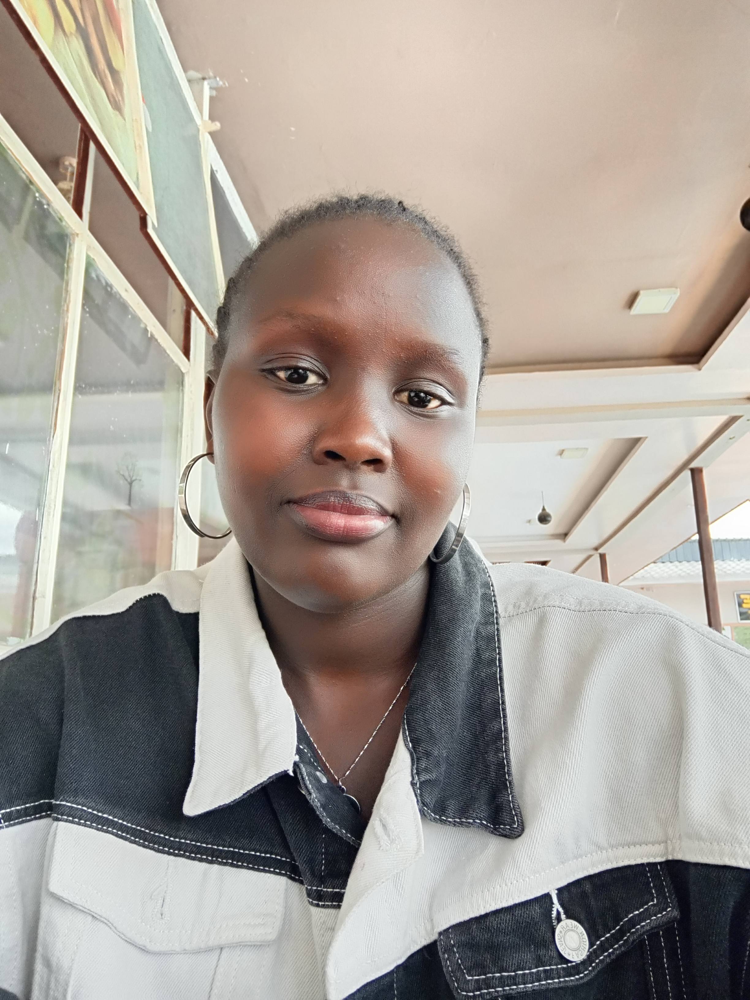

Hello, I'm Cynthia Ronoh, a Computer Science graduate from Multimedia University of Kenya. I am passionate about technology and continuously strive to stay updated with the latest advancements in the industry. My academic journey and hands-on experience have equipped me with strong skills in software development, data analysis, and machine learning. I am eager to apply my expertise to real-world challenges and contribute meaningfully to innovative projects. If you’d like to learn more about my skills and how I can add value to your team, feel free to connect with me on LinkedIn or reach out via email at cynthiaronoh24@gmail.com.
You can reach me out via:
LinkedIn Github